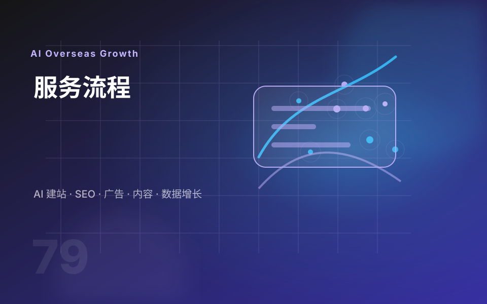

先判断建站方式
根据业务模型、资料完整度、是否交易、是否做 SEO，判断更适合 WordPress、Shopify、AI 展示站或定制开发。
外贸网站要同时面对海外买家、Google 搜索、广告落地页和后续运营团队。流程的重点是让每一步都有明确输出，而不是只交付一组静态页面。
根据业务模型、资料完整度、是否交易、是否做 SEO，判断更适合 WordPress、Shopify、AI 展示站或定制开发。
把产品分类、应用场景、项目案例、证书资质、FAQ 和资料下载整理成海外买家能快速理解的栏目。
上线前配置 SEO 基础、表单、WhatsApp、数据追踪和转化事件，让后续内容、广告和询盘复盘有依据。

你可以继续查看公司与转化相关页面，了解方案咨询、服务流程、团队背景和联系入口。
把工具安装、收录检查和流量分析作为上线后的延伸阅读，能让客户更清楚网站交付后为什么还需要持续维护。
告诉我你的网站、行业、产品数量、目标市场和参考网站，我会先帮你判断适合哪种建站方式，以及当前最应该优先解决的页面和转化问题。